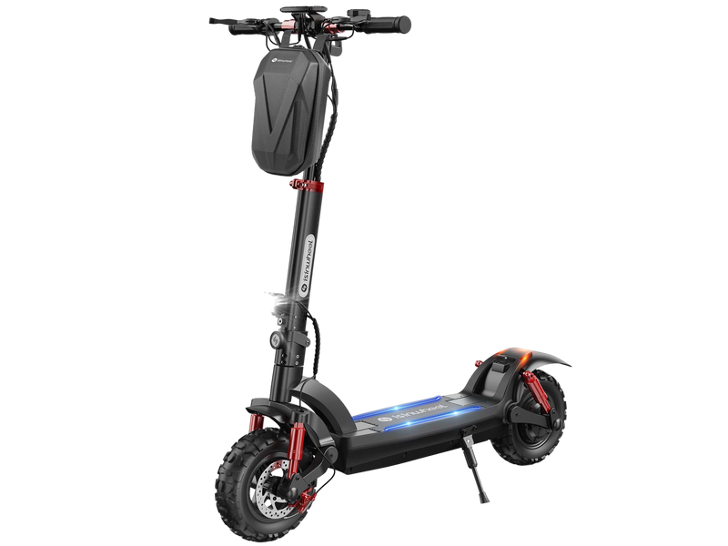
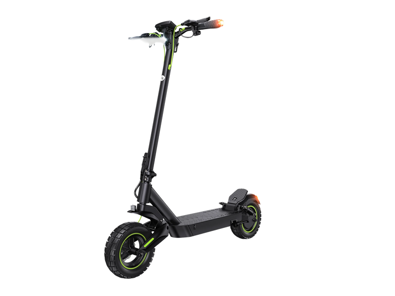
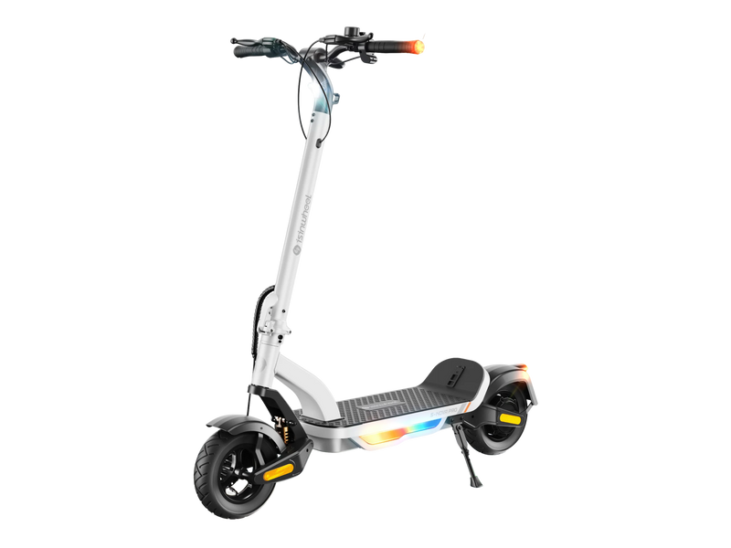
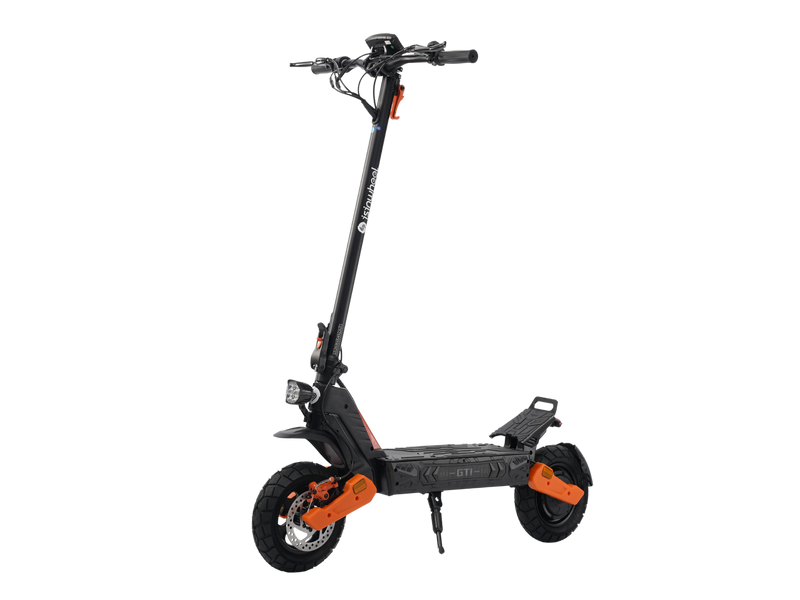
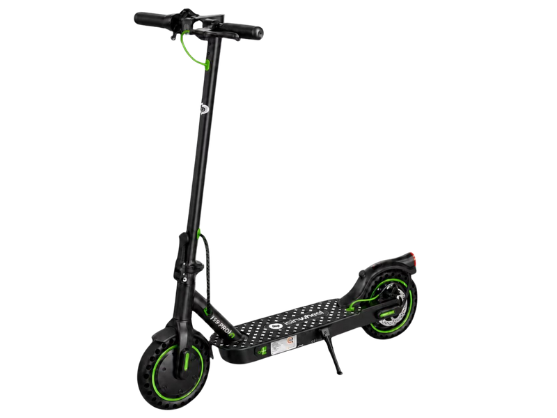

From the lightweight 27 lb S9 Pro to the dual-motor 28 mph GT2, we ranked iSinwheel's entire electric scooter lineup by real-world value, range, and ride quality — the brand delivering more speed and range per dollar than anyone else right now.
Quick Answer: The best iSinwheel electric scooter for most riders is the GT2 ($630). It delivers dual 500W motors (1,000W combined), 28 mph top speed, 37-mile range, 11-inch off-road pneumatic tires, full suspension, and IP54 water resistance — more performance per dollar than any comparable off-road scooter. For daily commuting, the S10Max ($620) offers the same 37-mile range and 1,000W motor with a street-optimized 10-inch tire. For budgets under $300, the S9 Pro ($280) is the best value: 19 miles, dual suspension, disc brakes, and app control for less than most competitors charge for basic scooters. Every model solar-charges through any portable power station with an AC outlet.
iSinwheel has quietly built one of the most competitive electric scooter lineups in the US market. While Gotrax dominates shelf space and Segway owns brand recognition, iSinwheel consistently delivers more motor power, more range, and more features per dollar — across every price tier from $280 to $630.
We ranked five current iSinwheel models — GT2, S10Max, S Nova Pro, GT1, and S9 Pro — using the same framework we apply to every brand:
Short on time? Here's every current iSinwheel scooter side by side. Jump to any section below for the full breakdown.
| Rank | Model | Motor | Speed | Range | Battery | Weight | Price |
|---|---|---|---|---|---|---|---|
| #1 Top Pick | GT2 | 1,000W | 28 mph | 37 mi | 720Wh | 53 lbs | $630 |
| #2 | S10Max | 1,000W | 28 mph | 37 mi | 819Wh | 48.7 lbs | $620 |
| #3 | S Nova Pro | 600W (1,000W peak) |
28 mph | 38 mi | 624Wh | 60.4 lbs | $480 |
| #4 | GT1 | 800W | 28 mph | 28 mi | 480Wh | 52.25 lbs | $560 |
| #5 Budget Pick | S9 Pro | 350W | 19 mph | 19 mi | 270Wh | 27.5 lbs | $280 |
Every iSinwheel scooter charges from a standard AC outlet — which means any portable solar generator with AC output can top it off using nothing but sunlight. Here's how long each model takes to solar-charge through a 200W panel setup:
| Model | Battery | Solar Charge Time (200W panel) | Cost Per Charge (Grid) |
|---|---|---|---|
| S9 Pro (270Wh) | 36V 7.5Ah | ~2 hrs peak sun | ~$0.04 |
| GT1 (480Wh) | 48V 10Ah | ~3 hrs peak sun | ~$0.07 |
| S Nova Pro (624Wh) | 48V 13Ah | ~4 hrs peak sun | ~$0.09 |
| GT2 (720Wh) | 48V 15Ah | ~4.5 hrs peak sun | ~$0.10 |
| S10Max (819Wh) | 54.6V 15Ah | ~5 hrs peak sun | ~$0.12 |

The iSinwheel GT2 is the performance king of this lineup. Dual 500W motors deliver 1,000W of combined power — enough for a 28 mph top speed and genuine hill-climbing ability that single-motor scooters can't match. Where the Gotrax G4 ($700) gives you one 500W motor and 25 miles of range, the GT2 gives you two motors and 37 miles for $70 less.
The 11-inch off-road pneumatic tires are the largest in the lineup, absorbing trail bumps and broken sidewalks that would rattle smaller-tired scooters. Combined with full front and rear suspension, the GT2 rides more like a light motorcycle than a scooter. IP54 water resistance means light rain won't kill it, and the 5-7 hour charge time from a wall outlet is reasonable for overnight recovery.
At 53 lbs, it's not the scooter you carry up four flights of stairs. It's the scooter you ride hard on mixed terrain and park in the garage. If your commute includes unpaved paths, gravel, or steep hills — or you just want the most capable electric scooter under $700 — the GT2 is the one.

The S10Max is the GT2's street-optimized sibling. Same 1,000W motor and 28 mph top speed, but packaged for pavement instead of trails. The 10-inch pneumatic tires ride smoother on city streets, and at 48.7 lbs it's 4 lbs lighter than the GT2 — a meaningful difference when you're folding it for the last block.
The standout spec is the battery: 54.6V 15Ah (819Wh) — the largest in the entire lineup. That translates to 37 miles of claimed range, and users have reported real-world rides of 23+ miles on a single charge at moderate speeds. For a daily 10-mile round-trip commute, that's nearly 4 days between charges.
Turn signals, dual suspension, and a 330 lb max load make this the scooter for heavier riders or anyone who carries a backpack. The only reason it ranks #2: the GT2's dual-motor AWD gives it an edge in capability that the S10Max's single motor can't match on hills and mixed terrain. If your ride is pure pavement, the S10Max is arguably the better pick.

The S Nova Pro is the sleeper pick. On paper, it claims the longest range in the entire lineup — 38 miles — from a 624Wh battery. It hits 28 mph on a 600W motor that peaks at 1,000W for acceleration and hill climbs. And it does all of this for $480, making it the best range-per-dollar in the lineup by a wide margin.
The 10-inch pneumatic tires with C-shaped front suspension and rear spring deliver a comfortable ride over city streets. Dual disc brakes provide strong stopping power. App control through the isinwheel Club app lets you adjust speed modes, set cruise control, and toggle the ambient deck lights.
The trade-off is weight: at 60.4 lbs, the S Nova Pro is the heaviest scooter in the lineup despite having a mid-tier motor. That's a lot of scooter to fold and carry. The 264 lb weight limit is also more restrictive than the GT2 and S10Max. But if your priority is maximum range at a mid-range price and you don't need to carry it often, this is hard to beat.

The GT1 sits between the performance GT2 and the commuter S10Max. It's an 800W single-motor scooter with 10-inch off-road pneumatic tires and swing-arm suspension front and rear — built for riders who want off-road capability without the GT2's weight or price.
28 miles of range from a 480Wh battery is solid for a mid-priced scooter. The 330 lb max load and E-ABS plus dual disc brakes are confidence-inspiring features at this price. The 5-6 hour charge time is the fastest among the higher-end models.
Why #4? At $560, it sits in an awkward spot — the GT2 is only $70 more and gives you dual motors and 9 more miles of range. Unless the GT2 is out of stock or you specifically want a lighter single-motor off-road scooter, the GT2 is the stronger value. The GT1 earns its rank on build quality and specs, not on value positioning.

At $280, the S9 Pro delivers specs that compete with $500+ scooters. 19-mile range at 19 mph — that's 50% more range than the Gotrax GXL V2 ($300) at $20 less. The 350W motor handles moderate inclines without the dramatic slowdown you get on the GXL V2's 250W motor.
Dual suspension, EABS electronic braking plus a rear disc brake, LED turn signals, cruise control, and isinwheel Club app connectivity — these are features you'd expect on a $400-500 scooter. At 27.5 lbs, it's also the lightest scooter in the lineup by a wide margin, making it the only iSinwheel you'd genuinely carry onto a train or up apartment stairs.
The trade-off: 8.5-inch pneumatic tires are smaller than the 10-11 inch tires on every other model. That means more vibration on rough pavement. And the 220 lb weight limit rules out larger riders. But for a college student, lightweight commuter, or anyone who needs a portable last-mile scooter without spending $500+, the S9 Pro is the obvious pick.
Get the GT2. Dual motors, 11″ off-road tires, and full suspension eat up trails, gravel, and broken sidewalks that would shake apart lighter scooters.
Get the S10Max. 37-mile range, 330 lb capacity, turn signals, and a sleek 10″ tire package built for pavement. Charges overnight, lasts for days.
Get the S Nova Pro. 38-mile range at $480. If you care about going the distance without paying GT2/S10Max prices, this is it.
Get the S9 Pro. 27.5 lbs, folds for transit, 19-mile range, and $280. The only iSinwheel light enough to carry upstairs.
The S Nova Pro claims 38 miles, followed by the GT2 and S10Max at 37 miles each. Real-world range depends on rider weight, speed, terrain, and temperature — expect 60-80% of claimed range under typical conditions. For a 170 lb rider on flat pavement at moderate speed, the S Nova Pro realistically delivers 25-30 miles and the GT2/S10Max around 24-28 miles.
It depends on your city and state. Many US cities allow electric scooters on bike lanes and streets but cap speeds at 15-20 mph. The GT2's 28 mph top speed exceeds most city limits — but most models include speed limiting modes that cap output to comply with local regulations. Always check your local e-scooter ordinances before riding.
iSinwheel consistently delivers more speed, range, and motor power per dollar. The GT2 ($630) beats the Gotrax G4 ($700) in every spec category. The S9 Pro ($280) offers 50% more range than the Gotrax GXL V2 ($300) for $20 less. Gotrax wins on brand recognition, US retail availability, and a longer track record. For raw performance per dollar, iSinwheel leads the market.
Yes — through any portable power station with an AC outlet. Connect a 200W solar panel to a power station like the EcoFlow RIVER 3 Plus or ALLPOWERS R600, then plug the scooter's stock charger into the AC outlet. The S9 Pro refills in ~2 hours of peak sun; the GT2 takes ~4.5 hours. Zero electricity cost, zero emissions.
iSinwheel provides US-based customer support through their website portal and email. All models include a standard manufacturer warranty. They've improved support response times significantly since 2024. However, they don't have the brick-and-mortar retail presence of Gotrax or Segway — warranty service routes through their online portal, which may mean shipping the scooter for repair rather than a local exchange.
The GT2 is our top pick for performance. The S9 Pro is the best budget buy. Every model solar-charges through a portable power station.
Shop GT2 — $630 ↗ Shop S9 Pro — $280 ↗One email when we publish something worth reading. No spam, no daily blasts. Unsubscribe anytime.
We respect your inbox. Unsubscribe with one click.